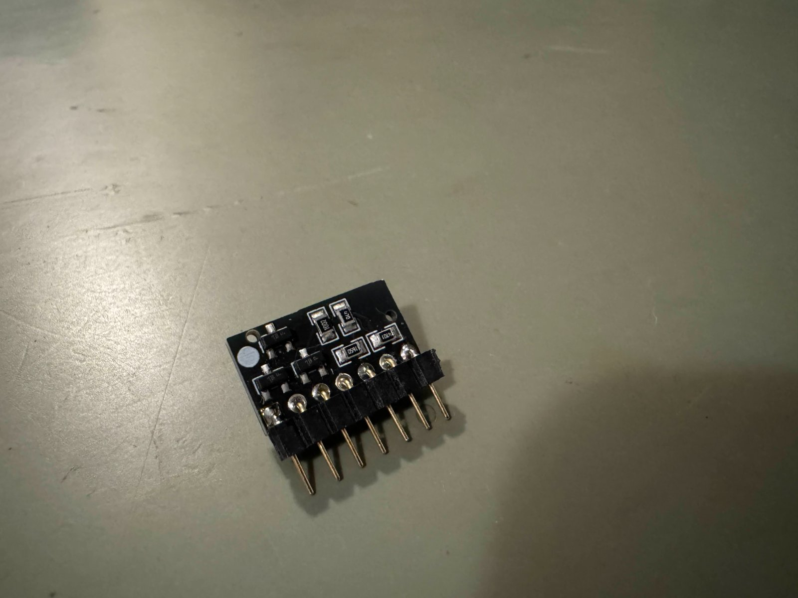
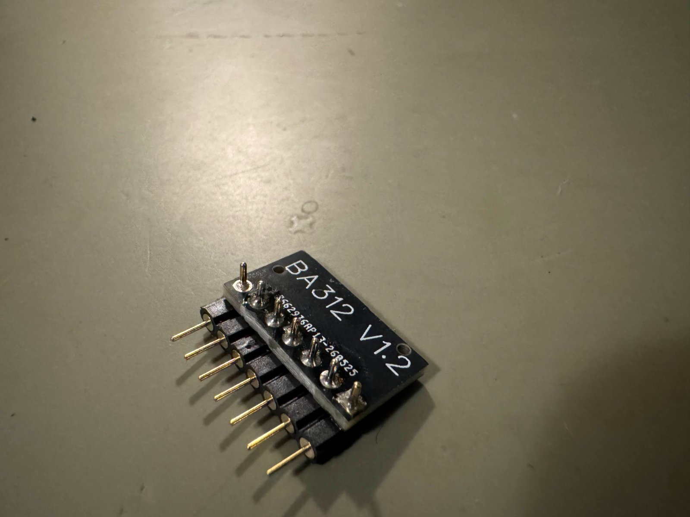
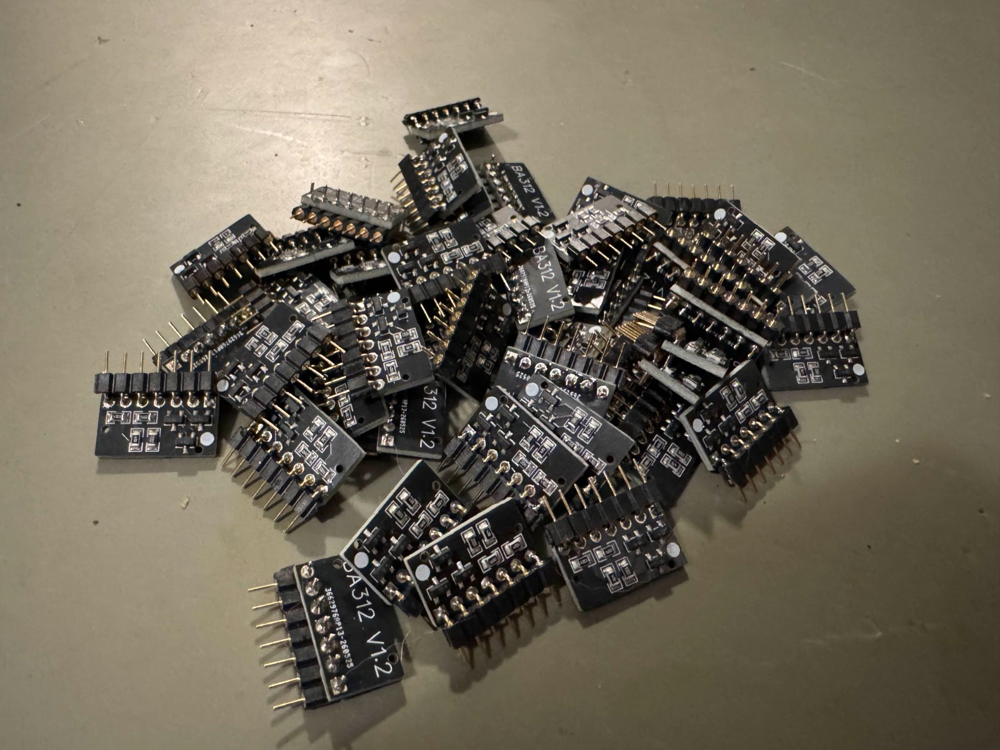

BA312 IC for Marantz, Sansui, and more
The BA312 V1.2 IC was the first product I ever sold here at Martin Audio Labs, and it is returning into full production!
This is a replacement for the popular IC chip used in phono stages and tone control stages in Sansui and Marantz receivers primarily. Contrary to online belief, the BA312 is not an op amp nor does it behave like one. This IC is an exact, identical replacement for the original IC package.
Unlike other IC replacements now on the market, this was the first replacement made and is still the highest performing out of all of them. We use high quality low noise transistors and precision resistors in an SMD form factor, minimizing trace lengths. The PCB is made to be as small as possible to reduce trace lengths further. The mounting pins are gold plated, round connectors. Unlike some replacements that use square pins, these pins fit perfectly in every board type and do not require widening the PCB holes. We use black PCBs so they do not draw attention to itself when installed. Unlike the Sparkos kits, we are not shoe-horning an op amp in place of the original device, which require circuit mods. This is a drop in part. No assembly required.
This IC has also been thoroughly measured here, and has measurably lower distortion especially in the higher frequencies than the original package. Every single IC is hand tested and works off the bat. Others have tested this IC and found it to be the lowest noise performer. Buy with confidence.